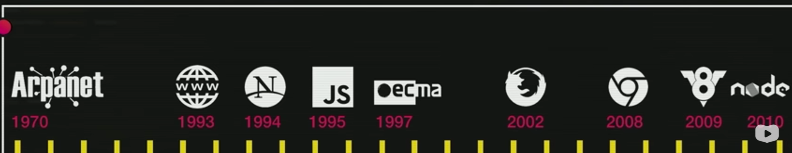

1970 - Guerra fria
Criação da DARPA, para ajudar na rede de informações, e foi criaDO ARPANET, e evoluiu com novas tecnologias e o nome passou como conhecemos a INTERNET.
Após sofrer várias atualizações em 1993 - Tim Berners-Lee, inglês criou a tecnologia que existe até hoje, e transformar o conteúdo em algo mais interativos e ligação em documentos. Criou então a linguagem HTML, o Protocolo HTTP, e fundou a WWW (Word Wide Web).
Sua equipe trabalha até CERN, para pesquisa de energia nuclear.
E para funcionar era preciso um navegador para funcionar, ai entrou a criação do Mozeik (primeiro navegador) nos Estados Unidos, criado pelo Mark Anderson.
1994 o Mark saiu do NCCA e se associou ao fundador da Cilicon Grafics, o DIN Clark, e fundaram a Netscaps.
A equipe de desenvolvimentos batizavam as coisas com nomes engraçados, e o nome do grupo era Motzila e homenageava o Godzila.
Em 1995 o Brando Nike, saiu da Cilicon grafics para a Netscaps, era o desenvolvedor com a tarefa para dar funcionalidades ao simples HTML, e ele tinha o projeto chamado MOCA (tipo de café), e nessa mesma época a San Micro Sistem estava desenvolvendo uma linguagem chamada JAVA, (não confunda o Java com o JavaScript, são duas linguagem diferentes).
E a linguagem Java estava ganhando fama e sendo chamada como a linguagem do futuro, então Brandon achou melhor rebatizar sua linguagem como JavaScript devido a fama da época da outra linguagem.
E a linguagem fez sucesso e atraiu a empresa chama Microsoft, e tinha acabado de lançar uma própria linguagem que tinha como código base do Mozaike e foi passado para uma empresa e essa empresa foi comprada pela Microsoft, e lançou um navegador chamado como INTERNET EXPLORE, sendo lançado com o Windows 95 e batizou a linguagem de JScript.
E a Netscaps, em 1997 resolveu padronizar a linguagem e junto com a ECMA empresa de padronização europeia e de computadores. Foi ai que junto com a Netscaps cedendo o código do JavaScript para a padronização, então surgiu a ECMA SCRIPT.
Em 2002, foi o ano de encerramento da briga entre a Netscaps e a Microsoft, devido a linguagem da programação, e a Netscaps acabou falindo, e os funcionários criaram uma fundação Mozzila, e ganhou uma nova roupagem e que usamos até hoje, chamado de FireFox.
E acabou perdendo bastante espaço em 2008, devido ao surgimento do GOOGLE Chrome, e em apenas 2 anos de vida se tornou o 3º mais usado no mundo. e Hoje é o mais famoso do mundo com 50% do mercado.
E o motor interno de JavaScript, com a versão da V8 da linguagem. referencia ao motor de carro. Gerando código justime. e o V8 como sendo código aberto. E um grupo pegou o código do V8 e criou a transformação do NODE JS sungindo em 2010. Podendo ser inclusive ser rodado no lado do servidor tbm, mas não é o foco deste.
Essa é uma linha temporal básica.

Evolução da linguagem da ECMAScript, em 1997 1.0, 1998 a versão 2.0, 1999 a versão 3.0, e demorou bastante e só em 2009 a versão ES5. eM 2015 ES6, ES em 2016 em ES 2017 e tbm em ES 2018. E a evolução do JavaScript surgiu varias ferramentas (Angula, React e etc).
E precisa conhecer o JavaScript para conhecer essas tecnologia.
Tecnologias que usa o JS , como o jQuery, é uma biblioteca.
2009, surgiu o Angular, sendo mantido pelo Google, e ajuda na criação de aplicações web. Sendo liguagem mais declarativa.
Facebook, criou sua prórpia biblioteca, o React.
Em 2014, surgiu framework o VUE, que foi criado pelo ex funcionário do google.
O ELECTRON, mantido pela GIT HUB , especializado para criação de interface graficas. o VS CODE, o programa para acessar o Whatsaap, o cha do discorde, foi feito em electron.
O IONIC é um sdk, para criar aplicações de dispositivos móveis.
E para finalizar, existem outras bibliotecas para criação de Jogos, e existe diversos framework e SDK, como o PHASER , o PixiJS, Impact, o Melon.js, o CraftyJS. e vários outros.